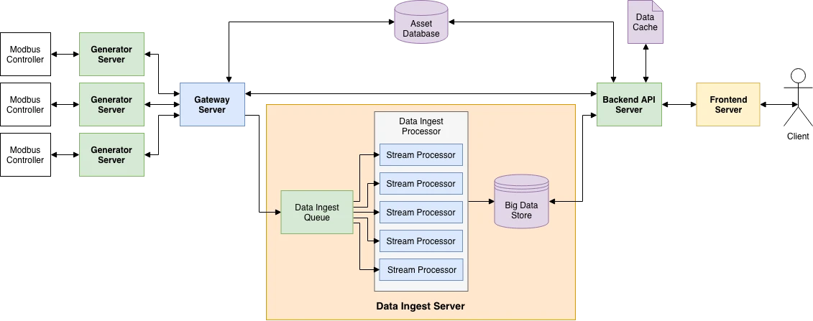

Evan Langlais
I make things and I have a website to prove it.
About Me
Software engineer with 7+ years of experience spanning cloud infrastructure, enterprise software, and full-stack product development. Currently based in Redmond, WA as a subject matter expert on Azure Core Networking's VNET team — building and operating distributed systems at hyper-scale.
I have been tinkering with computers and technology since the age of 11, becoming a sole proprietor under the name of Treehouse Technologies in the year 2012 as a freshman in high school. I played around with various aspects of tech such as video game development, server infrastructure and hosting, consumer system building, and freelance software development. That passion for computers eventually led me to major in the Computer Science and Engineering field at the University of Connecticut.
I have a passion for creating things -- whether that thing is websites, apps, music, cities, businesses, YouTube videos, I find pleasure in adding my own voice and creative touch to any space.
Work
Microsoft Corporation
June 2021 - Present
Redmond, WA
Software Engineer II -- Azure Core Networking, Virtual Networking (VNET) team
Core engineer on Azure Accelerated Connections (NSDI ‘23) from inception through production GA — a greenfield platform that disaggregates stateful network functions off individual hosts into shared pools of programmable hardware. Designed and delivered key platform subsystems, and became a primary technical resource for cross-org design coordination, customer escalations, and enabling feature teams to build on the platform.
Designed and delivered a high-throughput billing pipeline processing millions of dollars in daily revenue, requiring novel approaches to line-rate traffic classification under hardware constraints and end-to-end integration with upstream billing systems.
Architected and shipped a new resource provisioning mode (now publicly documented as Azure Virtual Network Routing Appliance) that unlocked critical AI customer workloads by adapting an established programming pipeline to support an entirely new usage pattern under tight timelines.
Drove platform production readiness by defining end-to-end reliability KPIs, building observability dashboards and regression testing infrastructure, and leading systematic investigations to measurable improvement. Served as a primary escalation point for cross-product investigations across the platform suite.
FactSet Research Systems
July 2019 - June 2021
New York City
Software Engineer III -- Productivity Suite Team
Built and shipped Office product extensions on the Productivity Suite team, delivering features that augmented customer workflows to improve efficiency and effectiveness directly within Excel, Word, and PowerPoint.
Partnered with product managers to define requirements and deliver end-to-end solutions using C# within the Razor WPF ASP.NET framework, integrating with Office via COM and VB.NET.
Build My Bod
February 2016 - July 2019
Freelance Software Engineer
Collaborated directly with CEO on product vision, viability, design, and implementation across the full stack to close competitive gaps and launch new revenue-generating features.
Owned product design and implementation across backend, frontend, and infrastructure, delivering features including vendor price-comparison tools and expanded product offering customization.
Publications
Disaggregating Stateful Network Functions
2023
20th USENIX Symposium on Networked Systems Design and Implementation
Abstract
Co-authored paper presenting Sirius, a system for disaggregating stateful network functions (firewalls, NAT, load balancing) into shared pools of P4-programmable NIC appliances, achieving 5-10x improvement in connections-per-second for Azure VMs. Now in production as Azure Accelerated Connections.
Presentation
Active Projects / Ventures
Park Predictor
A data platform for theme park wait time analytics and prediction.
Park Predictor is an end-to-end data platform that continuously collects, processes, and visualizes ride wait times across 50+ US theme parks — from Disney and Universal to Cedar Fair and Six Flags. A Go-based data collector polls live wait times every 5 minutes from parks nationwide, storing raw time-series data in PostgreSQL and computing derived analytics through a multi-layer processing pipeline.
The processing pipeline goes beyond raw wait times, computing real-time velocity and trend detection (is this line getting longer or shorter?), park-level crowd pressure scoring, pairwise attraction correlation analysis (which rides fill up together?), and crowd redistribution impact measurement (when a ride goes down, where do the crowds go?). These derived metrics power a Nuxt 4 analytics dashboard where users can monitor live conditions, explore historical trends, and compare wait patterns across rides on interactive time-series charts.
The long-term vision for Park Predictor is to leverage this growing dataset and analytics pipeline to build a predictive model — ultimately delivered via mobile app — that can tell park visitors when ride wait times are likely to drop, helping them make smarter decisions about when to queue and when to wait it out.
Family Archives
A private family media platform for preserving and sharing photos and videos.
Family Archives is a self-hosted family media platform built to give my family a private, centralized place to upload, organize, and relive photos and videos from family events. Members authenticate via passwordless email login, browse events in a clean dashboard, and view media through a built-in theater with full video playback and photo viewer — all without handing our memories over to a third-party service.
Under the hood, the platform is powered by a Nuxt 4 frontend deployed as an Azure Static Web App and a dedicated Go media processor running on my home NAS. Uploaded files are chunked and sent to a self-hosted Garage S3 instance, where the Go processor picks them up, transcodes video via FFmpeg, optimizes images, generates thumbnails, and archives originals — all automatically. Secure communication between the frontend and the Garage S3 endpoints is handled through a Cloudflare Tunnel, keeping everything accessible without exposing my home network.
While currently built for my family, the platform is designed with extensibility in mind — the group-based access control, event organization model, and self-contained processing pipeline are architected to potentially serve other families as a product in the future.
Past Projects / Ventures
HuskyTHON
A mobile application for the HuskyTHON Dance Marathon at the University of Connecticut.
The HuskyTHON Application is a modern web application that allows participants of the HuskyTHON Dance Marathon event at the University of Connecticut to keep up to date with various fundraising events, personal and team fundraising progress, and information regarding the dance marathon.
The application is a Vue3 web app utilizing the Ionic component library to create a cohesive 'native-esk' experience. It also utilizes a Node.js backend (hosted in Azure) responsible for brokering data from various sources into a single highly available and scalable API.
Emergency Generators "On-the-Cloud"
2018-2019
The senior design project as part of UConn's engineering curriculum. The problem / request came from a Connecticut company which installs and maintains Kohler generators.
Led a team of 6 academic peers to fulfill client requirement of allowing technicians to view data of, and send commands to, an existing infrastructure of over 7000 generators throughout the northeast, via a web app.
I became the project's lead architect, and after reading IOT and big-data white papers provided by our academic advisor I planned a five stage pipeline which would theoretically allow a full rollout of retrofitting the 7000+ generators, fully supporting the amount of data processing that would be associated with it. To implement the project, the team worked together to plan all necessary tasks, those tasks' dependencies, and estimated amount of work. Together, we were able to create a fully working prototype several weeks before UConn's Demo Day 2019.

The five stage data pipeline included
- Attaching a Raspberry Pi to the generator's computer, running a Go app to communicate via the MODBUS protocol to read sensor data and change generator settings. Data was packaged into efficient structures via Arvo and sent to gateway server
- The Go gateway server/router served several purposes, the main two being 1) keeping tabs on generator uptime by issuing heartbeats and 2) route incoming data packages to the processing pipeline and outgoing commands to the proper generator connection
- The processing pipeline started with a Kafka cluster to ensure scalability, and data was consumed via a Scala app that would spun up in a Spark cluster. The Scala app would unpack the data and transform the input into time-series data, POSTing that to an OpenTSDB database
- An express.js REST API was utilized to return generator inventory from MariaDB and their respective statuses from the gateway server, sensor time-series data, and relay commands back to the generator
- An Angular web-app provided a dashboard for a technician to log in, view the health of all generators they have permission to view, and visualize sensor data over time utilizing chart.js
HUE
2016-2018
A simple color matching game
HUE is a color matching game I built as a hobby project during college. A spiritual successor to an earlier prototype called Occasionally Blue, the player uses the full screen to intuitively select a color that is compared against a set of shapes randomly drawn on the screen utilizing the Delta-E 2000 algorithm. Still available on the App Store.
Treehouse Technologies
A sole proprietorship created to encapsulate various software products, system building services, and consulting.
Treehouse Technologies was originally founded by myself and two friends with a wildly ambitious vision of building video games to compete with AAA game studios. After the other two founding members left, I registered Treehouse Technologies as a sole proprietorship in my freshman year of high-school. From that point, the Treehouse Technologies brand became one of self and business experimentation--constantly exploring new technology and business ventures.
I credit most of the problem-solving and programming skills that I use today (both personally and professionally) to be a result of the creative experimentation that Treehouse Technologies enabled.
Education
University of Connecticut - Storrs, CT
2015 - 2019
Bachelor of Science in Engineering
Computer Science and Engineering — Magna Cum Laude (GPA: 3.85)
Get in touch
Feel free to contact me with questions about the information above via email or the various socials below.
© Evan Langlais. All rights reserved. Design: HTML5 UP.